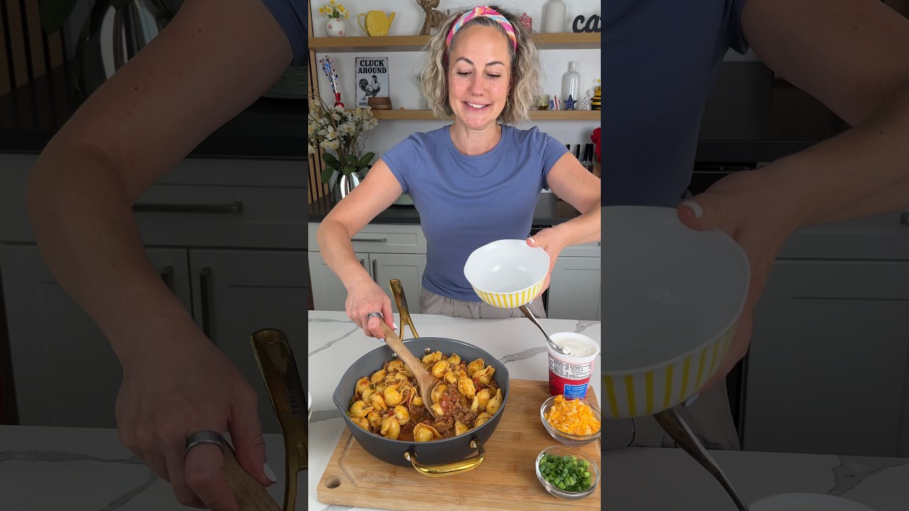

Total under 30 minutes
| Course | Main Dish |
| Categories | Beef, Pasta |
| Collections | One Pot, Kristin's Friends Cooking |
| Source | Kristin's Friends Cooking – YouTube |
| Notes | see “Notes” below |

1 lb ground beef
1 can Hunt's diced tomatoes
1 packet taco seasoning
1 tsp garlic powder
3 green onions, sliced, divided
1 package refrigerated cheese tortellini
1 cup shredded cheese, divided
1/2 cup broth, optional
Sour cream, for serving
Add the ground beef to a large pan over medium-high heat. Smash and brown it with a meat masher until fully cooked and broken into small crumbles. Don't drain.
Add the diced tomatoes, taco seasoning, garlic powder, and half the green onions. Mix with the meat masher. Reduce to low, cover, and cook 7–10 minutes.
Add the tortellini directly to the pan and stir to coat. Add a splash of broth if you want it saucier. Sprinkle half the cheese on top.
Cover and cook on low 7 more minutes, until the tortellini is cooked through. Stir halfway.
Top with the remaining cheese and green onions. Serve with sour cream and any other toppings you like.
Gap in this export: Can size of the diced tomatoes (a standard 14.5 oz can is typical)
Gap in this export: Size of the taco seasoning packet
Gap in this export: Size of the refrigerated tortellini package
Gap in this export: Number of servings